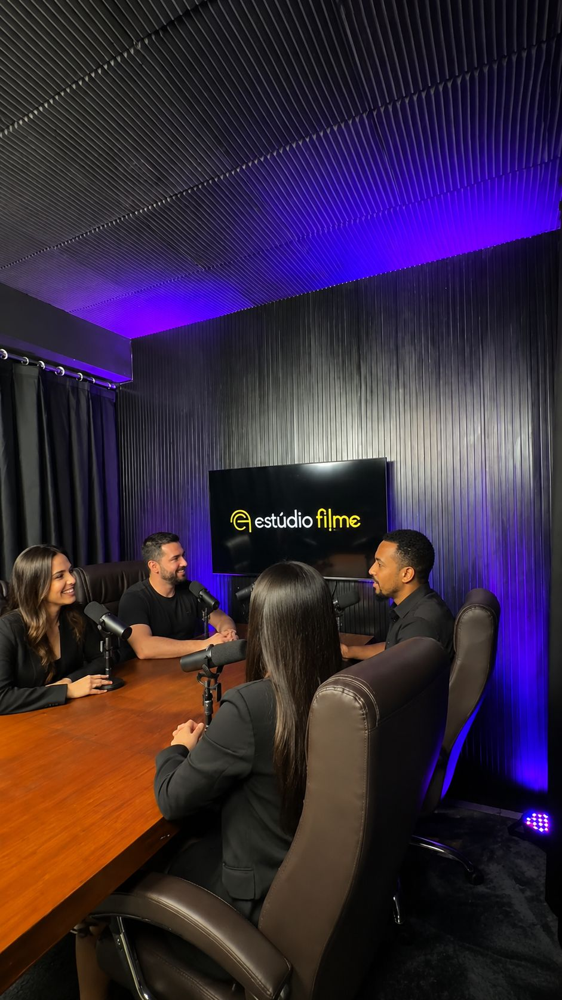
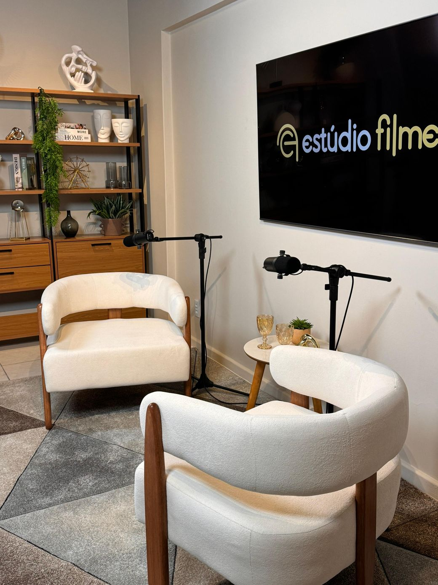
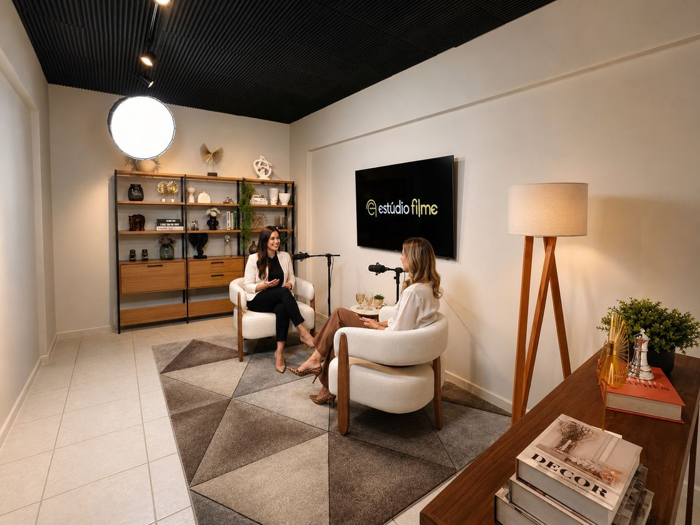

Podcast
O clássico das grandes conversas, com presença e conforto.
Talk · EntrevistasAmbientes autorais, direção em cena e imagem de cinema — agora na Praia do Suá. Grave podcasts, cursos, lives e conteúdo de marca com a sofisticação que a sua presença pede.
Câmeras, áudio e iluminação de ponta para um resultado impecável.
Uma equipe que orienta você em cena, com leveza e precisão.
Edição refinada e cortes prontos, no seu tom e identidade.
Atendimento próximo e agenda reservada só para o seu projeto.
Do clássico ao contemporâneo, cada ambiente carrega uma atmosfera própria.

O clássico das grandes conversas, com presença e conforto.
Talk · Entrevistas
Clean e elegante, para aulas e conteúdo com imagem de autoridade.
Cursos · Lives
Iluminação de cinema e direção para campanhas, anúncios e VSLs de impacto.
Anúncios · VSLUm ponto central e de fácil acesso para receber você e o seu projeto.
EndereçoR. Ulisses Sarmento, 24 — Salas 407 e 408
Praia do Suá · Vitória / ES · CEP 29052-320
WhatsAppFalar agora
HorárioSegunda a sábado, das 8h às 20h
Agendar visitaNa Praia do Suá: Rua Ulisses Sarmento, 24 — Salas 407 e 408, Vitória-ES, CEP 29052-320.
Podcasts, cursos e mentorias, lives, entrevistas, clipes e conteúdo de marca — com ambientes autorais e imagem de cinema.
Sim. Acompanhamos você em cena e cuidamos da pós-produção, com edição refinada e cortes prontos para as suas redes.
Pelo WhatsApp. Conversamos sobre o seu projeto, indicamos o ambiente ideal e reservamos o seu horário.
Agende a sua gravação na Praia do Suá e sinta, de perto, a diferença que o cuidado faz.
Falar no WhatsApp